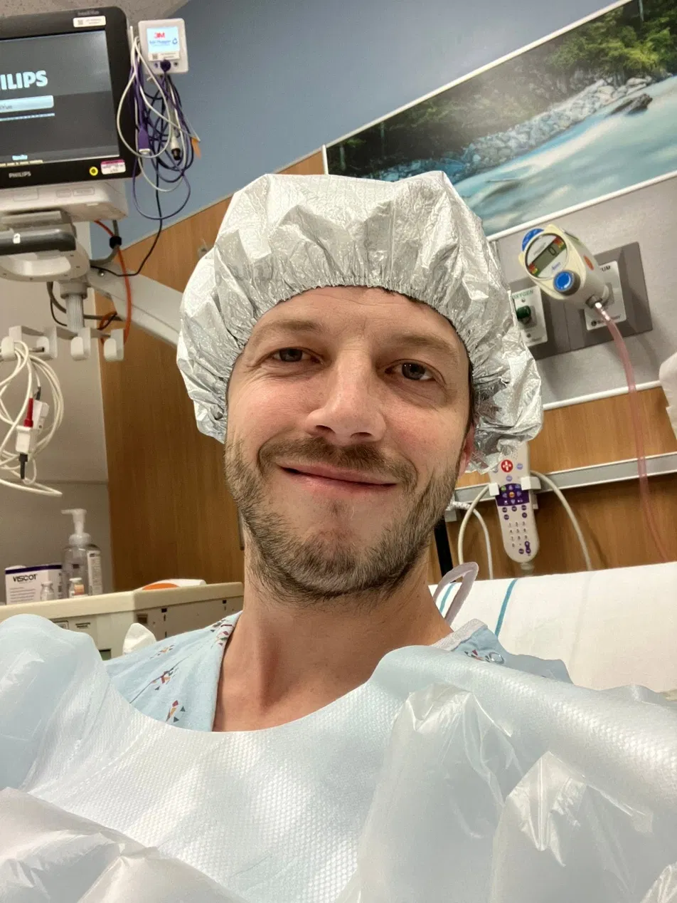
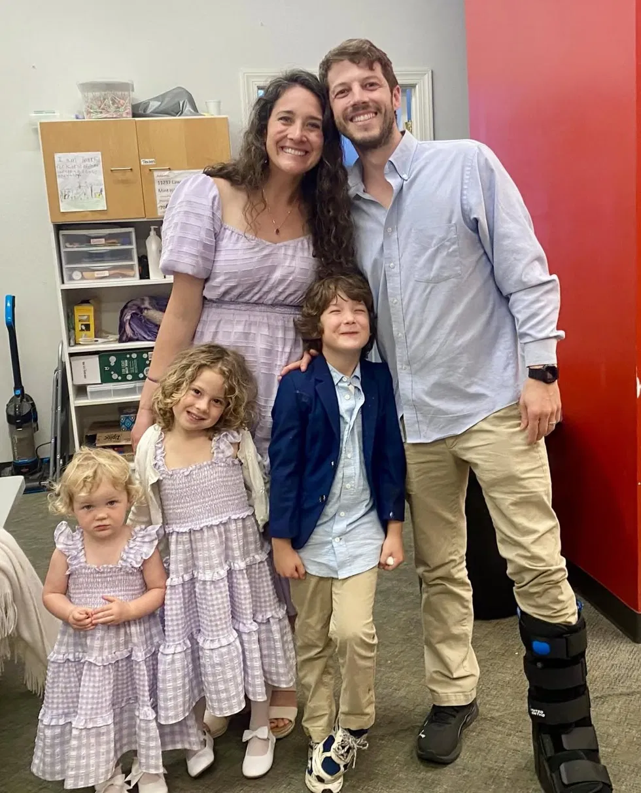
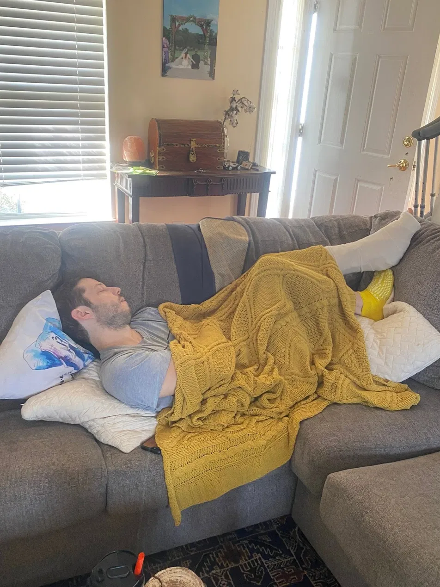

I ruptured my Achilles just before my daughter's 2nd birthday
On February 16th, 2026, my left calf turned to jello at a trampoline park. I'm a 38-year-old dad of three — I run, I bike, I jump on the trampoline with my kids. My wife and I had gone rock climbing the day before to celebrate our 8th married Valentine's. I felt invincible. But on Feb 16th, I took my kids to a local trampoline park. I tried the tallest "Warped Wall," pushed off hard, and felt the power vanish. No loud pop. I could still wiggle my toes. So I iced it, limped around the party so my kids wouldn't worry, and told myself I'd just pulled something.
Two weeks of rest, ice, red light therapy, and elevation later, the swelling hadn't reduced. So I went to a doctor. When the PA tested my Achilles strength with a gentle squeeze, I felt an intense pain (worse than at the Warped Wall) and I had to lay down to prevent passing out. He said, "You tore it." He was kind, but rushed — too busy to sit with the anxiety-filled questions piling up in my head. A few days later I had a minimally invasive PARS repair — scheduled, of all days, on my youngest daughter's 2nd birthday. I napped through the piñata.
Then came the part that became this whole project. I went home with a splint, an ice pack, and a thin packet of papers my kids promptly lost. No daily goals. No milestones. No one to tell me that the fear — of re-rupturing, of never chasing my kids again — was normal and survivable. The physical recovery was hard. The mental recovery, alone and in the dark, was harder.
With no real guidance, I did the only thing I knew how to do: I researched obsessively. I went down rabbit holes on why organic pineapple juice can stimulate the cells that repair tendons, and how vitamin C fuels robust collagen regeneration. If no one was going to hand me a map, I'd draw one myself.
What carried me wasn't a gadget. It was my wife — a saint — my church, my family, and a faith that I was never doing this alone. I crawled until my knees grew calluses, decorated a lime-green cast with my kids, and slowly learned to receive help.
I'm three months post-op now. I can light-jog, swim with my kids, and grind out an assisted calf raise. I'm not finished — but I can see the path. The Faithful Mend is the guide I wish someone had handed me on Day 1: real milestones, honest tips, and a steady reminder that you're stronger than this season and never as alone as it feels.
— Joshua, founder of The Faithful Mend
Walk it with me →

"Be strong and courageous. Do not be afraid; do not be discouraged, for the Lord your God will be with you wherever you go."— Joshua 1:9